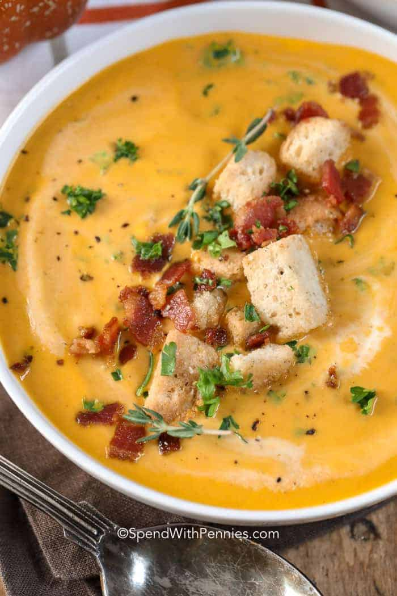

Pumpkin Cream Soup

Description
Pumpkin Soup is a creamy fall soup with lots of flavor and using canned pumpkin makes this recipe a breeze. This rich soup is full of pumpkin, warm spices, and pureed until smooth and topped with bacon.
Ingridients
- bacon - 150gr
- broth - 1.5l
- sour cream - 150ml
- pumpkin - one mediumsized pumpkin
- onions - 2 medium sized onions
- seasoning: salt, paper, oregano
Instructions
- Fry bacon and set aside. Cook onions in bacon fat.
- Add broth & seasonings and simmer to blend flavors.
- Stir in pumpkin and cream and simmer.
- Puree soup until smooth with a hand blender.